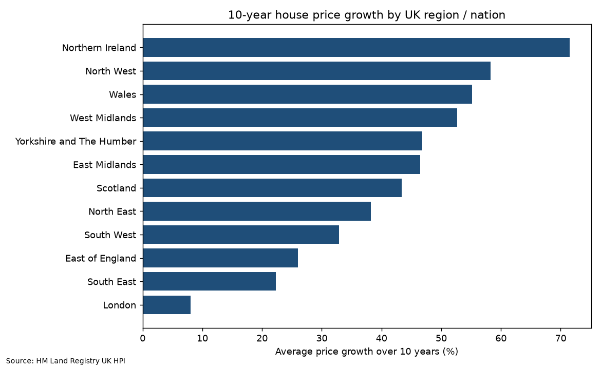
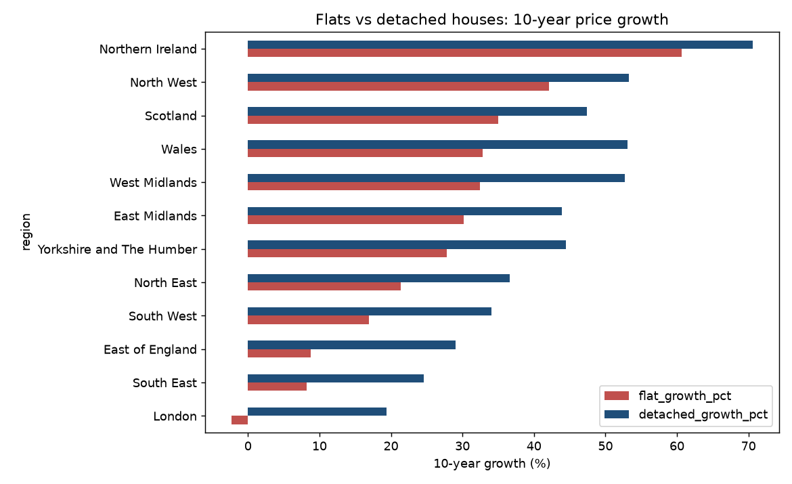

Problem
Which regions and property types gained most in a decade, and where are prices still below their 2022–23 peak?
Data
HM Land Registry UK HPI full file (July 2026 release), filtered to the 9 English regions plus Wales, Scotland and Northern Ireland. Cleaned table: data/regional_hpi_clean.csv.
Approach
load_and_run.py loads the cleaned data into SQLite; all analysis lives in queries.sql (CTEs, self-joins on date offsets, correlated subqueries, aggregation). Query outputs: results.md.
Findings
- Northern Ireland (+71.5%), North West (+58.3%) and Wales (+55.2%) grew fastest; London grew just 8.0% (£509,080 → £550,037), the weakest of all 12.
- London flat prices fell 2.3% over ten years, while London detached houses rose 19.4%; flats lagged detached homes in every region.
- Four southern regions remain below their 2022–23 peak: London −5.4%, South West −3.8%, South East −2.8%, East of England −2.3%. All other regions are above it (North East +8.1%, Scotland +7.1%).
- England recorded sales: 1,053,532 in 2021 (stamp-duty holiday) vs 630,549 in 2023, the lowest of 2015–2024.


Limitations
nominal prices; recent sales volumes are revised upward as registrations complete.
Code & data
queries.sql · load_and_run.py · results.md · data/regional_hpi_clean.csv · README